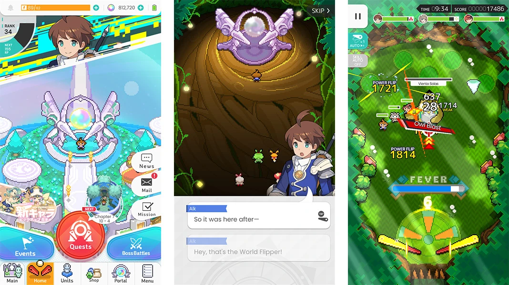

World Flipper
World Flipper é um RPG com combate no estilo de pinball, onde as unicas ações são ativar os "Flippers" que jogam as bolas (sua equipe) na direção indicada, utilizar habilidades ou avançar nos inimigos. Mesmo assim, consegue ter um sistema de combate complexo, divertido e satisfatório, além de possuir uma boa história e uma maravilhosa trilha sonora. O jogo utiliza gráficos de pixel-art, porém com animações muito bem feitas.
A história principal do jogo se passa após o anterior herói ter sido derrotado pelo lorde das trevas, onde então esse herói, numa forma de mascote (Light) é encontrado pelos protagonistas Alk e Stella, e retornam para uma vila chamada Starview Village, que possui um portal que conecta vários mundos, assim encontrando novos aliados para a jornada para derrotar o lorde das trevas. Além da história principal, cada personagem que você obtém desbloqueia sua história de personagem, mostrando brevemente um pouco de suas interações com os protagonistas, suas habilidades e personalidade.
Você pode experimentar World Flipper clicando Aqui!